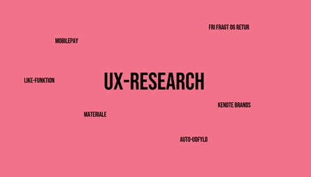
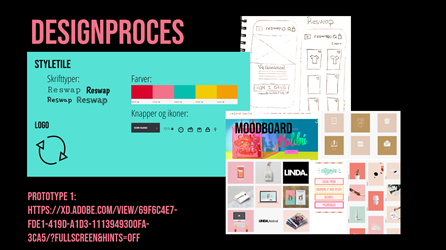

Pitch - 03.03.03

I denne opgave skulle vi forberede en pitch, som samlede al vores arbejde inden, under og efter vores prototype.
Her havde vi gjort brug af forskellige testmetoder og research metoder.
Jeg startede med at lave desk research, hvor jeg indsamlede viden og indsigter fra materiale som allerede var tilgængeligt. Såsom andre websites, analyser, artikler mv.
Herefter lavede vi observationer. Vi skulle observere en købsoplevelse online, og herefter skulle vi observere en fysisk købsoplevelse.
Udover det lavede vi også et interview, en survey og testede vores prototype af.
Det endte ud i min pitch, som jeg fremlagde og fik feedback på af mine medstuderende.
Proces

